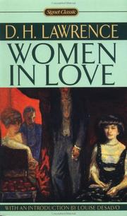
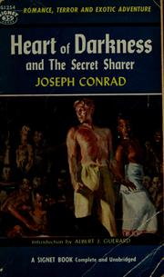

A tale of passion set in the bleak Yorkshire moors in mid 19thC, far from the Victorian uprightness, Wuthering Heights depicts the mutual love of Catherine and Heathcliff till destruction rends the narration; yet cruelty is only to be met with forgiveness in the following generations. Romantic, impassioned and wild, it is also a dark journey in the human soul.

Women In Love
Dark, but filled with bright genius, Women in Love is a prophetic masterpiece steeped in eroticism, filled with perceptions about sexual power and obsession that have proven to be timeless and true.
The Return of the Native
The native of the title is Clym Yeobright, who returns to the area from the bright society of Paris and, as any reader of Hardy knows, all is not smooth. He is quickly taken by and marries the one woman he should not--Eustacia Vye. The suffering that follows is mitigated somewhat by the ending

Heart of Darkness
Heart of Darkness (1899) is a novella by Polish-English novelist Joseph Conrad, about a voyage up the Congo River into the Congo Free State, in the heart of Africa, by the story's narrator Charles Marlow. Marlow tells his story to friends aboard a boat anchored on the River Thames.